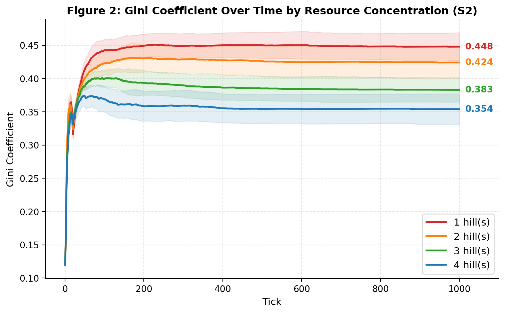
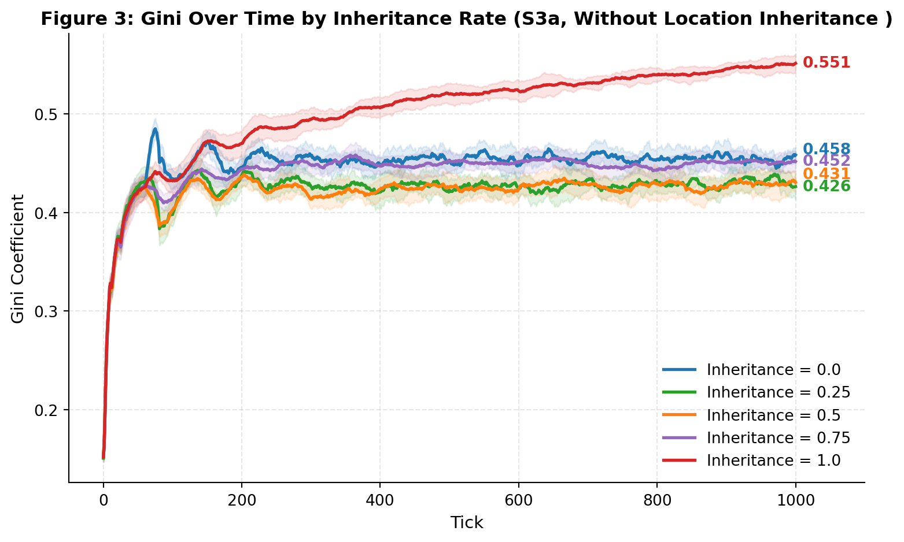
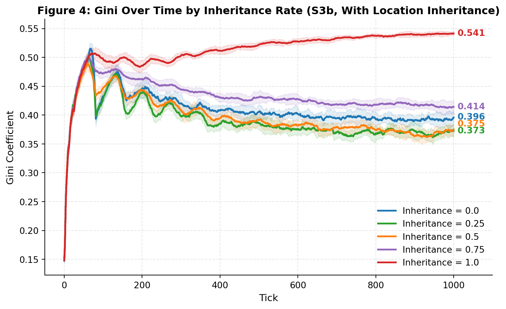
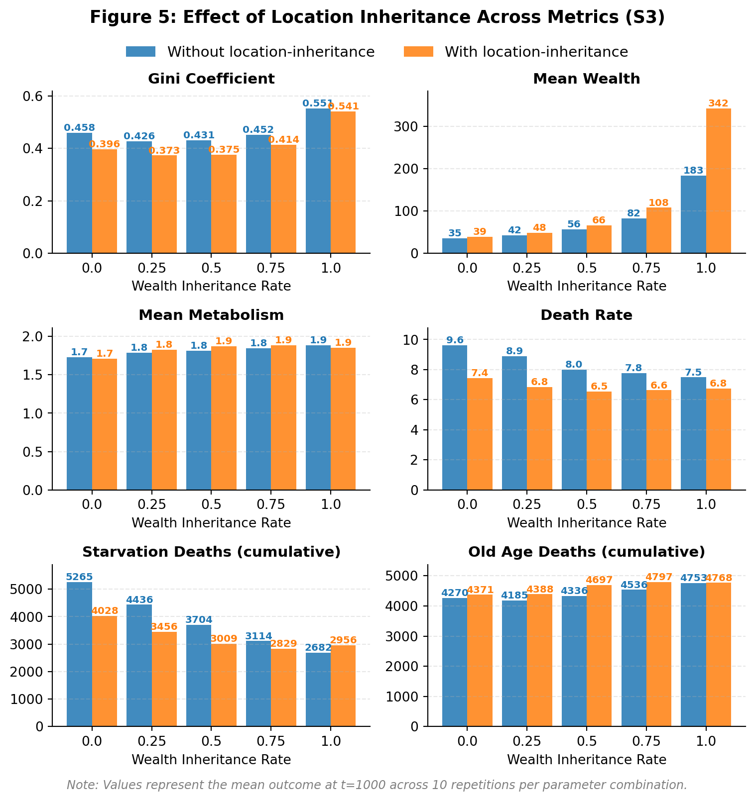
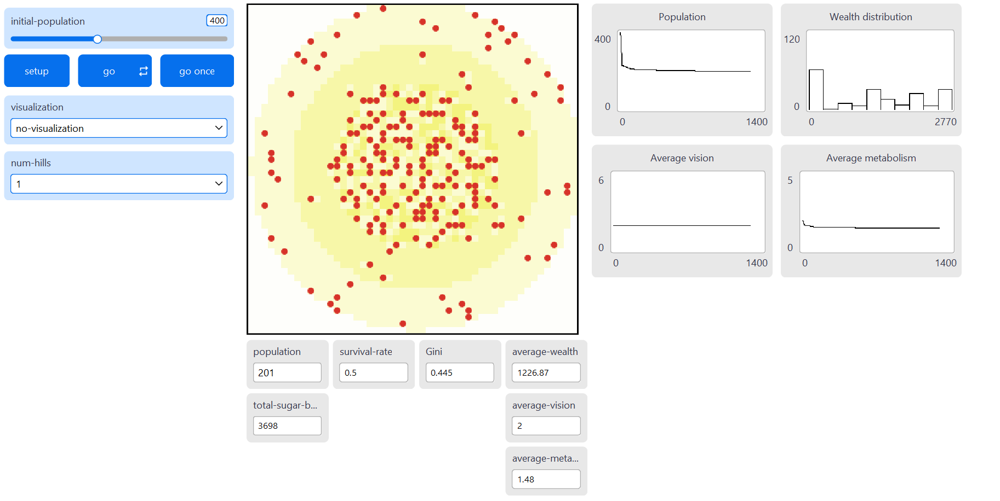
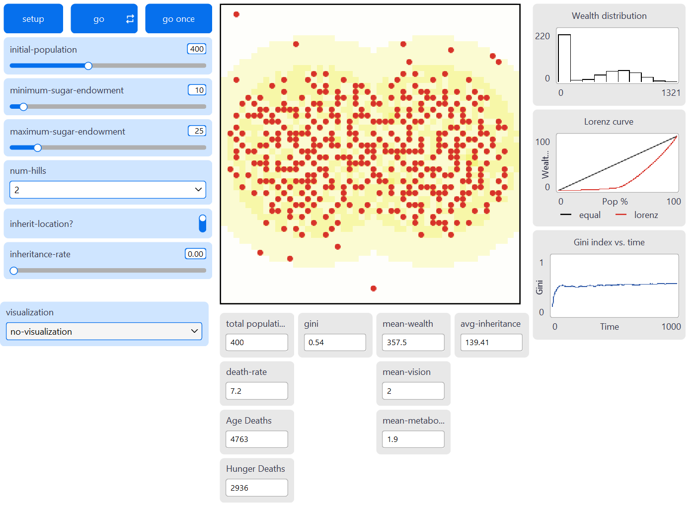

CASA0011 Coursework 1 - Systematic Experimentation (SugarScape)
Systematic Experimentation – SugarScape
1. Aim
This study investigates how spatial resource distribution and intergenerational wealth transfers shape inequality. Two NetLogo SugarScape models were adapted to examine these mechanisms separately. SugarScape 2 evaluates how resource concentration (1 peak versus 4 peaks) affects survivability and inequality within a single generation. SugarScape 3 introduces wealth and location inheritance to understand how intergenerational transfers interact with geography to amplify or dampen inequality over time. Inequality is measured in both using the Gini coefficient1.
2. Background
Economic inequality remains a persistent structural challenge. Piketty and Goldhammer (2014) document rising wealth inequality across advanced economies, driven by returns to capital exceeding economic growth. Geography plays a foundational role in shaping these dynamics. Krugman (1991) shows how spatial clustering of economic activity creates self-reinforcing regional inequality while Chetty et al. (2014) demonstrate that a child’s place of birth remains one of the strongest predictors of economic mobility in the United States. These findings suggest that spatial resource distribution can imposes structural constraints that individual ability alone cannot overcome. Understanding why inequality emerges and what sustains it is relevant for policymakers designing redistributive interventions.
Intergenerational transfers compound these effects. Nekoei and Seim (2023) find that inheritances may initially reduce inequality but reverse over time as wealthier heirs accumulate more while poorer heirs deplete transfers.
Because such dynamics are difficult to isolate using traditional econometric methods, agent-based models provide a useful alternative for examining path dependence and emergent inequality (Farmer and Foley, 2009). SugarScape (Epstein and Axtell, 1996) offers a useful framework for investigating how geography and inheritance jointly influence wealth stratification.
3. Methods
3.1 Model Modifications
SugarScape 2 (Constant Growback) and 3 (Wealth Distribution) from the NetLogo Models Library (Wilensky, 1999a, 1999b) were modified to share a common 50×50 landscape and agent trait ranges.
Resource maps were generated programmatically with 1–4 symmetric hills, using concentric sugar rings (1-4) scaled to maintain approximately constant total sugar (~3,700). Agents were assigned random vision (1-3), metabolism (1–3) and initial endowment (10–25).
SugarScape 3 further introduces:
Wealth Inheritance: An inheritance-rate (0–1) transfers a fraction of a dying agent’s sugar to offspring. Only agents above median wealth pass on sugar, simulating capital preservation opportunities available only to wealthier populations.
Location Inheritance: An inherit-location? toggle allows offspring to spawn near the parent (within 3 patches) rather than at a random location.
Additional reporters were added to track inequality (Gini), wealth, survival, and mortality. Full code is in the Appendix.
3.2 Key Assumptions
SugarScape 2 models within-generation competition without replacement. Agents compete for resources and die permanently when sugar reaches zero. With no replacement, the population declines.
SugarScape 3 introduces finite lifespans with max-age (60-80) and one-to-one replacement, maintaining a constant population. With inheritance-rate set to zero, each generation begins without accumulated advantage. Increasing inheritance-rate introduces compounding effects.
All experiments used 400 initial agents and 10 repetitions per parameter combination and 1,000 ticks. Both models assumed constant growback (1 sugar per tick up to patch maximum), without trade, and movement toward the highest-sugar visible patch.
3.3 Experimental Design
Experiment 1 (S2): num-hills was varied from 1 to 4 (Figure 1) to examine spatial concentration effects.

Experiment 2 (S3): inheritance-rate was varied at intervals of 0.25 between 0.00 and 1.00, with inherit-location? toggled on and off, holding geography constant with num-hills = 2.
4. Results
4.1 Experiment 1: Resource Concentration and Inequality (S2)
Figure 2 shows how the Gini coefficient changes over time for each hill configuration. All configurations begin with Gini at approximately 0.122 and rise sharply in the first 100 ticks as agents compete for resources and weaker agents die off. The trajectories then plateau. The 1-hill configuration reaches the highest final Gini (0.448), while the 4-hill configuration reaches the lowest (0.354), with 2-hill and 3-hill configurations falling in between.
With total sugar held constant, survival rates were broadly similar across configurations, suggesting that resource geography affects the distribution of wealth rather than overall carrying capacity. Mean wealth increased from 959 in the 1-hill setup to 1,117 in the 4-hill setup.
| Table 1: Summary Metrics for Experiment 1 (S2) | |||||
| Hills | Gini | Survival | Mean Wealth | Mean Vision | Mean Metabolism |
|---|---|---|---|---|---|
| 1 | 0.448 ± 0.021 | 0.51 ± 0.01 | 959 ± 45 | 2.1 | 1.5 |
| 2 | 0.424 ± 0.023 | 0.51 ± 0.02 | 1034 ± 48 | 2.1 | 1.6 |
| 3 | 0.383 ± 0.018 | 0.51 ± 0.02 | 1067 ± 25 | 2.1 | 1.5 |
| 4 | 0.354 ± 0.023 | 0.53 ± 0.01 | 1117 ± 46 | 2.2 | 1.5 |
4.2 Experiment 2: Inheritance and Inequality (S3)
The introduction of wealth and location inheritance reveals a complex, non-linear relationship between intergenerational transfers and wealth stratification.
4.2.1 Wealth Inheritance only
Figure 3 plots Gini trajectories under varying inheritance-rate (0.00-1.00) without location inheritance. At moderate inheritance-rate (0.25-0.50), the Gini is lower than the no-inheritance baseline, falling from 0.458 to 0.431 at inheritance-rate = 0.50. However, at higher inheritance-rate (0.75-1.00), the Gini rises sharply above the baseline reaching up to 0.551 at full inheritance-rate (1.00).

This U-shaped pattern reflects two competing dynamics. Moderate inheritance acts as insurance where offspring of above-median agents receive a buffer that reduces the impact of unfavourable random traits, compressing the wealth distribution. At higher inheritance-rate the larger transfers create persistent wealth differences where wealth compounds across generations faster than it dissipates. Mean wealth rises significantly from 35 at baseline to 183 at full inheritance-rate (Table 2). Death rate decreases monotonically from 9.6 to 7.5, with fewer starvation deaths as inheritance-rate increases, corroborating the insurance effect.
| Table 2: Summary Metrics for Experiment 2 (S3a - Without location inheritance) | |||||||
| Inherit. Rate |
Gini | Mean Wealth |
Mean Vision |
Mean Metabolism |
Death Rate |
Age Deaths |
Starve. Deaths |
|---|---|---|---|---|---|---|---|
| 0.0 | 0.458 ± 0.008 | 35 ± 2 | 2.1 | 1.7 | 9.6 ± 0.2 | 4270 | 5265 |
| 0.25 | 0.426 ± 0.013 | 42 ± 1 | 2.0 | 1.8 | 8.9 ± 0.4 | 4185 | 4436 |
| 0.5 | 0.431 ± 0.009 | 56 ± 1 | 2.1 | 1.8 | 8.0 ± 0.3 | 4336 | 3704 |
| 0.75 | 0.452 ± 0.010 | 82 ± 3 | 2.0 | 1.8 | 7.8 ± 0.3 | 4536 | 3114 |
| 1.0 | 0.551 ± 0.009 | 183 ± 5 | 2.1 | 1.9 | 7.5 ± 0.3 | 4753 | 2682 |
4.2.2 Wealth and Location Inheritance
Enabling location inheritance generally reduces inequality compared to wealth inheritance alone (Figure 4 and 5). At the wealth inheritance baseline, simply allowing offspring to start near their parent’s location reduces the Gini from 0.458 to 0.396. This occurs because offspring of successful agents are born near productive resource hills, reducing “search cost” and starvation risk, uplifting the broader base of agents.
Figure 5 illustrates how location inheritance significantly accelerates wealth accumulation. At full inheritance-rate (1.0), mean wealth nearly doubles from 183 (without location inheritance) to 342 (with location inheritance). This accumulation is driven by improvements in mortality where starvation deaths drop from 5,265 to 4,028 when location inheritance is added, allowing more agents to survive until they die of old age.

| Table 3: Summary Metrics for Experiment 2 (S3b - With location inheritance) | |||||||
| Inherit. Rate |
Gini | Mean Wealth |
Mean Vision |
Mean Metabolism |
Death Rate |
Age Deaths |
Starve. Deaths |
|---|---|---|---|---|---|---|---|
| 0.0 | 0.396 ± 0.011 | 39 ± 2 | 2.0 | 1.7 | 7.4 ± 0.3 | 4371 | 4028 |
| 0.25 | 0.373 ± 0.010 | 48 ± 2 | 2.0 | 1.8 | 6.8 ± 0.3 | 4388 | 3456 |
| 0.5 | 0.375 ± 0.009 | 66 ± 3 | 2.0 | 1.9 | 6.5 ± 0.2 | 4697 | 3009 |
| 0.75 | 0.414 ± 0.012 | 108 ± 2 | 2.0 | 1.9 | 6.6 ± 0.2 | 4797 | 2829 |
| 1.0 | 0.541 ± 0.004 | 342 ± 9 | 2.0 | 1.9 | 6.8 ± 0.3 | 4768 | 2956 |

4.2.2 Comparison between experiments
The experiments reveal that geography establishes a structural baseline range of inequality generated through spatial competition, within which intergenerational mechanisms operate.
At low to moderate inheritance rates (0.25–0.50), inequality falls below the spatial-only baseline as modest transfers buffer stochastic disadvantage and compress dispersion, even while mean wealth rises. Once inheritance exceeds a threshold (≥ 0.75), accumulation dominates: wealth persists and compounds across generations faster than it dissipates. Inequality then surpasses the spatial baseline, reaching 0.551 at full inheritance without location persistence and 0.541 with it. Intergenerational transmission therefore operates as a regime-switching mechanism, dampening geography-driven inequality at moderate levels but transforming it into durable stratification at high levels.
While the Gini coefficient provides a consistent basis for comparison across models, it captures different structural forms of inequality. In SugarScape 2, inequality reflects competitive selection within a single generation, driven by spatial concentration and trait variation. In SugarScape 3a, the Gini captures capital persistence, where wealth differences compound across generations. In SugarScape 3b, inequality becomes spatially embedded, reflecting the intergenerational transmission of both capital and locational advantage. Thus, similar Gini values across experiments may reflect fundamentally different generative mechanisms.
5. Discussion
5.1 Wealth inheritance dynamics (Insurance vs Accumulation)
The results highlight an interesting dual-nature of wealth inheritance. At low levels, it functions as a social safety net, reducing the number of “stochastic deaths” caused by poor trait draws (e.g., high metabolism or poor location endowment). However, as inheritance-rate approaches 1.0, the system transitions into a dynastic regime. Wealth becomes less a signal of agent fitness (vision or metabolism) but of ancestral luck.
The model also showed that location inheritance can function as a powerful wealth multiplier. When agents inherit both sugar and proximity to resource hills, mean wealth at full inheritance nearly doubled. This mirrors structural advantages in real-world systems that allow the wealthy to compound gains through passive proximity to opportunities, while the poor are forced to perform with near-flawless efficiency to achieve similar outcomes.
5.2 Limitations and Sensitivities
While the model provides insights into the mechanics of wealth stratification, several limitations must be noted.
Constant Population: The model utilizes a one-to-one replacement system upon agent death (hatch 1). In real-world systems, birth rates often correlate inversely with wealth, which could create steeper inequality trajectories.
Static Resource Hills: In a more dynamic environment, resource depletion or shifting climates could force migration, potentially disrupting the “location inheritance” advantage.
Trait Sensitivity: The Gini trajectories are highly sensitive to the metabolism and vision ratio. If metabolism were increased relative to sugar grow-back rates, the “insurance effect” of moderate inheritance might disappear, as even a small inheritance would be insufficient to prevent risk of starvation.
Limitations of the Gini coefficient: While the Gini coefficient provides a consistent basis for comparing inequality across spatial and inheritance regimes, it captures only the dispersion of wealth at a given moment, and does not distinguish between inequality arising from competitive selection and that arising from dynastic persistence. In high-inheritance scenarios, measured inequality may resemble or even fall below spatial-only baselines, yet wealth becomes increasingly decoupled from agent traits and more dependent on inherited position. The Gini therefore detects distributional change but not the underlying mechanism generating it. Future extensions could incorporate mobility (e.g. Rank-Rank slope (Venator, 2015; Van Der Erve et al., 2024)) or lineage-based measures to better capture structural persistence.
6. Conclusion
This study shows that spatial resource distribution establishes a structural baseline for inequality, but intergenerational transmission shapes how that inequality evolves. In the absence of inheritance, inequality reflects spatial competition and trait-based selection. Introducing wealth transfers produces a non-linear effect where moderate inheritance reduces inequality by buffering agents against stochastic disadvantage, while high inheritance generates compounding effects that exceeds the inequality produced by geography alone.
Location inheritance reinforces these dynamics by lowering survival risk near productive resource clusters and accelerating wealth accumulation. As inheritance rate increases, wealth becomes progressively detached from individual traits and more dependent on inherited position within the spatial landscape.
These findings suggest that inequality is shaped not only by unequal access to space, but by the mechanisms that allow advantage to persist and accumulate across generations. Policies aimed at reducing inequality must therefore address both spatial disparities in opportunity and the channels through which unfair wealth and locational advantages are transmitted.
Additional Diagrams
Screenshot of Netlogo Interface under Experiment 1 (S2)

Screenshot of Netlogo Interface under Experiment 2 (S3)

Source code can be found here (https://github.com/benjamintee/CASA_ABM_Assessment)
Netlogo models can be found here (https://github.com/benjamintee/CASA_ABM_Assessment/nlogo)
References
Chetty, R. et al. (2014) “Where is the land of Opportunity? The Geography of Intergenerational Mobility in the United States *,” The Quarterly Journal of Economics, 129(4), pp. 1553–1623. doi: 10.1093/qje/qju022.
Epstein, J. M. and Axtell, R. L. (1996) Growing Artificial Societies: Social Science from the Bottom Up. The MIT Press. doi: 10.7551/mitpress/3374.001.0001.
Farmer, J. D. and Foley, D. (2009) “The economy needs agent-based modelling,” Nature, 460(7256), pp. 685–686. doi: 10.1038/460685a.
Hasell, J. (2023) “Measuring inequality: What is the Gini coefficient?” Our World in Data. Available at: https://ourworldindata.org/what-is-the-gini-coefficient (Accessed: February 24, 2026).
Krugman, P. (1991) “Increasing Returns and Economic Geography.”
Nekoei, A. and Seim, D. (2023) “How Do Inheritances Shape Wealth Inequality? Theory and Evidence from Sweden,” The Review of Economic Studies, 90(1), pp. 463–498. doi: 10.1093/restud/rdac016.
Piketty, T. and Goldhammer, A. (2014) “The Metamorphoses of Capital,” in Capital in the Twenty-First Century. Harvard University Press, pp. 113–139. Available at: https://www.jstor.org/stable/j.ctt6wpqbc.7.
Van Der Erve, L. et al. (2024) “Intergenerational mobility in the UK,” Oxford Open Economics, 3(Supplement_1), pp. i684–i708. doi: 10.1093/ooec/odad064.
Venator, J. (2015) “Measuring relative mobility, part 1,” Brookings. Available at: https://www.brookings.edu/articles/measuring-relative-mobility-part-1/ (Accessed: February 24, 2026).
Wilensky, U. (1999a) “NetLogo Models Library: Sugarscape 2 Constant Growback.” Evanston, IL: Center for Connected Learning; Computer-Based Modeling, Northwestern University. Available at: https://ccl.northwestern.edu/netlogo/models/Sugarscape2ConstantGrowback.
Wilensky, U. (1999b) “NetLogo Models Library: Sugarscape 3 Wealth Distribution.” Evanston, IL: Center for Connected Learning; Computer-Based Modeling, Northwestern University. Available at: https://ccl.northwestern.edu/netlogo/models/Sugarscape3WealthDistribution.
Footnotes
The Gini coefficient measures the inequality of a frequency distribution such as income or wealth levels (Hasell, 2023). A Gini coefficient of 0 reflects perfect equality, where all income or wealth values are the same. In contrast, a Gini coefficient of 1 (or 100%) reflects maximal inequality among values, where a single individual has all the income or wealth while all others have none.↩︎